Camshaft: Service and Repair
Removal
Timing chain cover removal is not required for this procedure.
CAUTION:
- Use fender covers to avoid damaging painted surfaces.
- To avoid damage, unplug the wiring connectors carefully while holding the connector portion.
NOTE:
- Mark all wiring and hoses to avoid misconnection.
- Turn the crankshaft pulley so that the No. 1 piston is at top dead center.
1. Remove the cylinder head cover.
2. Set No.1 cylinder to TDC (Top dead center) on compression stroke.
(1) Turn the crankshaft pulley and align its groove with the timing mark of the timing chain cover.
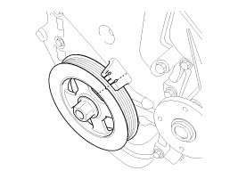
(2) Check that the TDC marks of the intake and exhaust CVVT sprockets are in straight line on the cylinder head surface as shown in the illustration. If not, turn the crankshaft by one revolution (360°) more.
(3) Mark the timing chains corresponding to the timing marks of the CVVT sprockets.
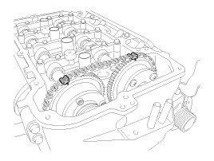
3. Remove the crankshaft damper pulley.
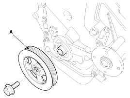
CAUTION:
Do not press the pulley or apply the excessive force to prevent the rubber part from being deformed.
NOTE:
There are two methods to hold the ring gear when removing the crankshaft damper pulley.
- Install the SST (09231-2B100) to hold the ring gear after removing the starter.
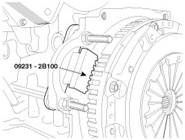
- Install the SST (09231-3D100) to hold the ring gear after removing the service cover.
1. Remove the air guard (A).

2. Remove the two transaxle mounting bolts (A) and the service cover (B) on the bottom of the lower crankcase.
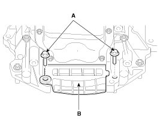
3. Adjust the length of the holder (A) so that the grooves of the holder puts into the ring gears (B) at the closest position.
4. Adjust the angle and length of the links (C) so that the two transaxle mounting bolts can be fastened into the original mounted holes.
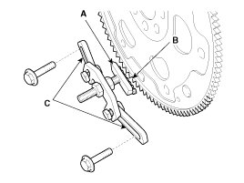
5. Install the SST using the two transaxle mounting bolts. Tighten the bolts and nuts of the holder and links securely.
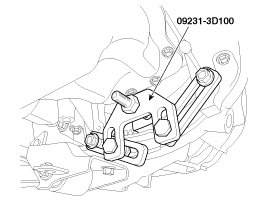
4. Remove the service plug bolt (A) with the gasket (B).
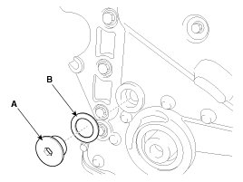
5. Remove the tensioner arm bolt (A).
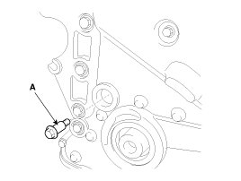
6. Push down the tensioner arm (A).
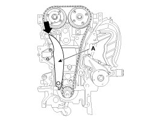
7. Remove the camshaft bearing caps.
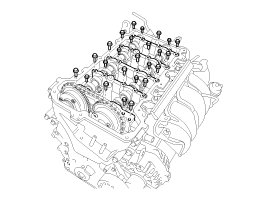
8. Remove the exhaust camshaft (A) first, then intake camshaft (B).
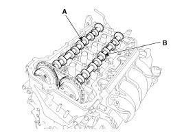
9. Remove the tensioner arm (A).
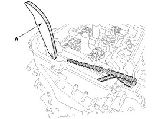
NOTE:
To hold the timing chain, tie it with strap.
Installation
1. Compress the piston of the tensioner using a handy bar (A) and then insert a stopper pin (B) into the hole on the tensioner to hold the compressed piston.
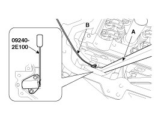
2. Place the intake camshaft (A) and then insert the tensioner arm (B) along the timing chain.
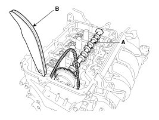
3. Place the exhaust camshaft (A).
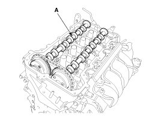
NOTE:
The timing marks of each CVVT sprocket should be matched with timing marks (painted link) of timing chain when installing the timing chain.
4. Install the camshaft bearing caps.
Tighten the bolts, in several passes, in the sequence as shown.
Tightening torque
M6 bolts:
11.8 - 13.7 N.m (1.2 - 1.4 kgf.m, 8.7 - 10.1 lb-ft)
M8 bolts:
18.6 - 22.6 N.m (1.9 - 2.3 kgf.m, 13.7 - 16.6 lb-ft)

CAUTION:
Be careful not to change the position and direction of bearing caps.
5. Using a suitable tool, move the tensioner arm to align the tensioner bolt hole with the service hole.
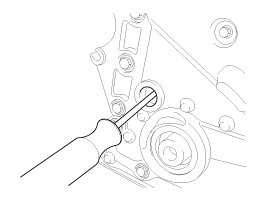
6. Install the tensioner arm bolt (A).
Tightening torque:
18.6 - 22.6 N.m (1.9 - 2.3 kgf.m, 13.7 - 16.6 lb-ft)
7. Remove the stopper pin from the tensioner.
8. Turn the crankshaft two turns in the operating direction (clockwise), and then check that the TDC marks of the CVVT sprockets are in straight line on the cylinder head surface.
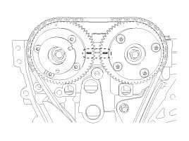
9. Install a service plug bolt (A) with a gasket.
Tightening torque:
29.4 - 39.2 N.m (3.0 - 4.0 kgf.m, 21.7 - 28.9 lb-ft)
CAUTION:
Do not reuse the service plug bolt and gasket.
10. Install the crankshaft damper pulley (A).
Tightening torque:
196.1 - 205.9 N.m (20.0 - 21.0 kgf.m, 144.7 - 151.9 lb-ft)
CAUTION:
Do not press the pulley or apply the excessive force to prevent the rubber part from being deformed.
NOTE:
There are two methods to hold the ring gear when installing the crankshaft damper pulley.
- Install the SST (09231-2B100) to hold the ring gear after removing the starter.
- Install the SST (09231-3D100) to hold the ring gear after removing the service cover.
1. Remove the air guard (A).
2. Remove the two transaxle mounting bolts (A) and the service cover (B) on the bottom of the lower crankcase.
3. Adjust the length of the holder (A) so that the grooves of the holder puts into the ring gears (B) at the closest position.
4. Adjust the angle and length of the links (C) so that the two transaxle mounting bolts can be fastened into the original mounted holes.
5. Install the SST using the two transaxle mounting bolts. Tighten the bolts and nuts of the holder and links securely.
11. Install the cylinder head cover.